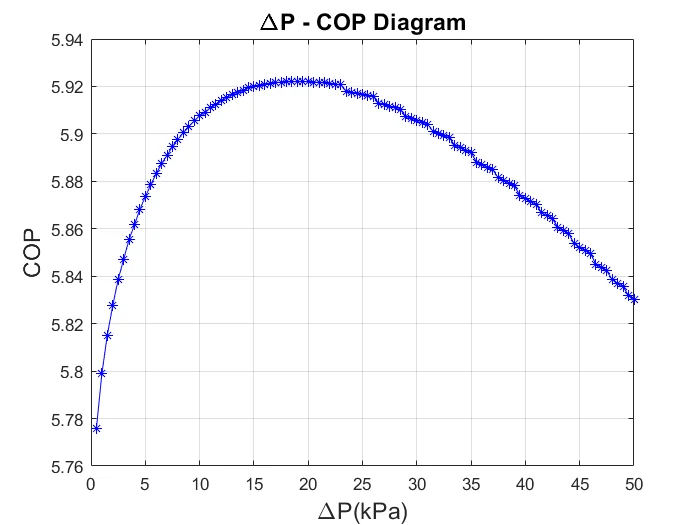
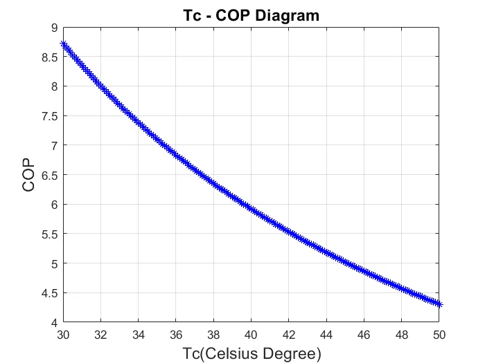
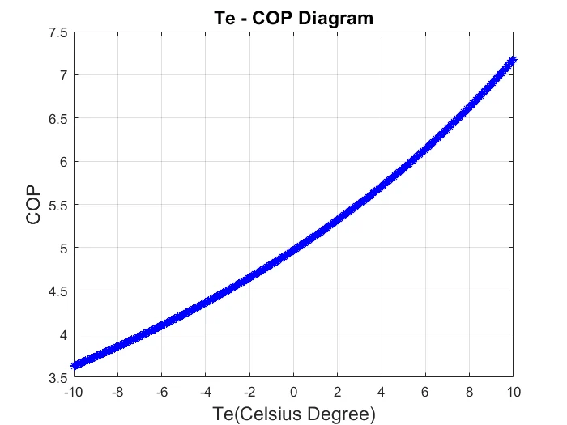
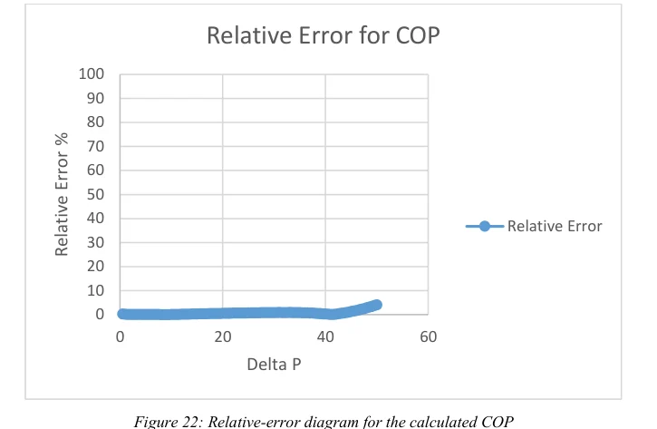
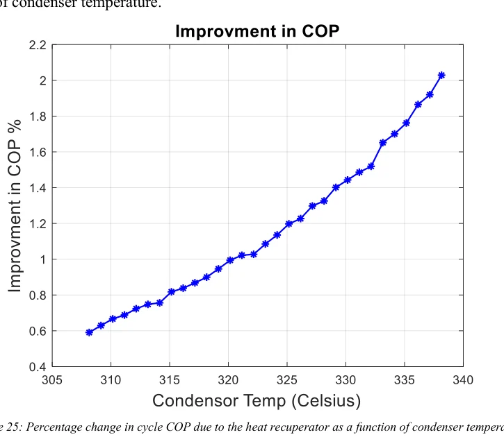

Undergraduate Specialization Project · 31 July 2024
Thermodynamic Design and Optimization of a Vapor-Compression Refrigeration Cycle with Ejector Expansion
A numerical investigation of an R1234yf two-phase ejector refrigeration cycle, including thermodynamic simulation, literature-based validation, regression-assisted optimization and preliminary ejector geometry design.
View Full Report (PDF)Download Report
Abstract and Research Context
This undergraduate project examines the potential of an ejector-expansion vapor-compression refrigeration cycle to recover part of the energy lost during conventional throttling. The system is modeled with R1234yf as the working refrigerant, and its performance is evaluated through the coefficient of performance (COP) and volumetric cooling capacity (VCC).
The study develops an iterative thermodynamic model using MATLAB with thermophysical properties obtained from REFPROP. Operating-condition sensitivity is investigated for condenser and evaporator temperatures and for an ejector-related pressure-difference parameter. Calculated results are compared with published reference data.
A regression-tree predictor and genetic algorithm are subsequently used to explore favorable operating conditions. The final design stage determines preliminary ejector dimensions using literature-based correlations and represents the resulting geometry in SolidWorks.
Research objective: Assess refrigeration-cycle performance, identify favorable numerical operating conditions and establish an initial geometric design for a two-phase ejector.
Methodology
Cycle Formulation
Governing thermodynamic relations and one-dimensional ejector-component assumptions were established. Refrigerant state properties were evaluated through the REFPROP interface in MATLAB.
Iterative Numerical Solution and Validation
The simulation iterates on entrainment ratio and refrigerant state conditions to satisfy convergence requirements. COP predictions were compared with data digitized from the reference literature.
Performance Modeling and Optimization
A regression-tree model was trained in MATLAB to estimate COP as a function of condenser temperature, evaporator temperature and the pressure-difference parameter. Five-fold cross-validation was used to evaluate prediction error, followed by a genetic-algorithm search.
Preliminary Ejector Geometry
Nozzle, mixing-section and diffuser dimensions were estimated using published correlations and design charts. The resulting geometry and drawings were modeled in SolidWorks.
Methodological scope: the submitted report documents a thermodynamic-cycle model and a preliminary component design. It does not document a resolved CFD field simulation, fabrication, or completed experimental testing of the ejector.
Selected Computational Findings
The values below are reported numerical outcomes from the submitted undergraduate report and should not be interpreted as experimental measurements.
| Item | Reported result |
|---|---|
| Model validation | Maximum relative COP error of approximately 4% compared with reference data; around 90% of evaluated points had an error below 1% (report p. 41). |
| Operating-parameter study | Model sensitivity assessed for condenser temperature, evaporator temperature and ejector pressure difference using COP and VCC outputs (pp. 36–39). |
| Heat recuperation | The modeled maximum COP change from adding a heat recuperator was approximately 2% within the investigated conditions (p. 42). |
| Regression training grid | A parameter grid containing 86,100 input combinations was specified for model training (p. 28). |
| Optimization output | The report gives a model-predicted maximum COP of 8.68 for its selected bounds and assumptions (p. 47). |
| Preliminary CAD design | Two-phase ejector geometry constructed in SolidWorks from estimated section dimensions and angles (pp. 50–51). |
All performance figures depend on the model formulation, numerical assumptions and input conditions described in the PDF. Validation uses published data rather than new laboratory measurements.
Selected Figures and Engineering Results
The following figures are reproduced from my submitted report. Figure numbers and printed page references follow the source report; the full PDF is linked below.






Complete Undergraduate Project Report
Thermodynamic Design and Optimization of a Vapor-Compression Refrigeration Cycle with Ejector Expansion. University of Tehran, July 2024, 72 pages.
The full document contains assumptions, governing equations, numerical procedures, comparison with published data, optimization, preliminary geometry, references and MATLAB code appendices.
Open Full Report (PDF)Download PDF
Supervisor: Dr. Behrang Sajadi
Researcher: Hamid Motallebi
Correspondence: hamidmotallebi2002@gmail.com